One red doorway. Step in. Quiet's cousin with one idea added: a red doorway that holds the badge. Memorable, still minimal.
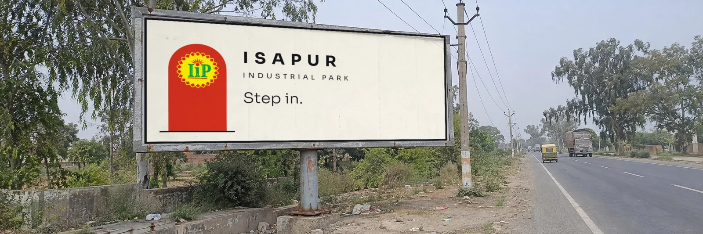
Taken from the Portal element you liked in your own iterations: the entrance as a symbol. The badge sits inside a vermilion arch on warm ivory, the way a gateway frames a view. The arch is the only graphic device. It repeats on every board, on the gate fascia and as a stamp, so people learn it. It also gives a pole serial: three boards of rising red steps, then the doorway.
Used exactly as supplied, at 33 to 54 percent of the board width, with generous clear space (at least one tenth of its width). Never recoloured, stretched, rotated or given effects. Please supply the vector master before large print.
Balance of colour. CMYK values are approximate: approve a printed proof.
700 with wide tracking for ISAPUR, 300 for the line
500
| Step in. |
| अंदर आइए |
| Every factory begins with one step. |
| A modern industrial address. |
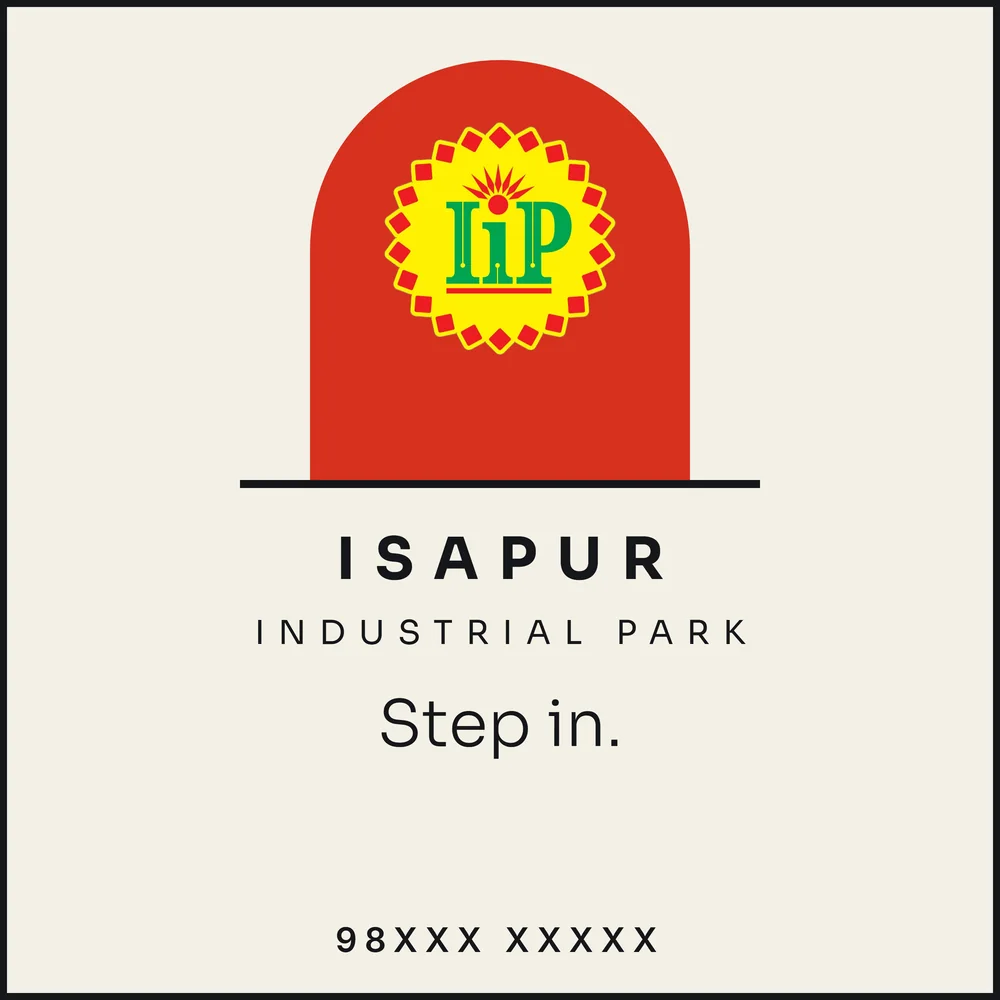
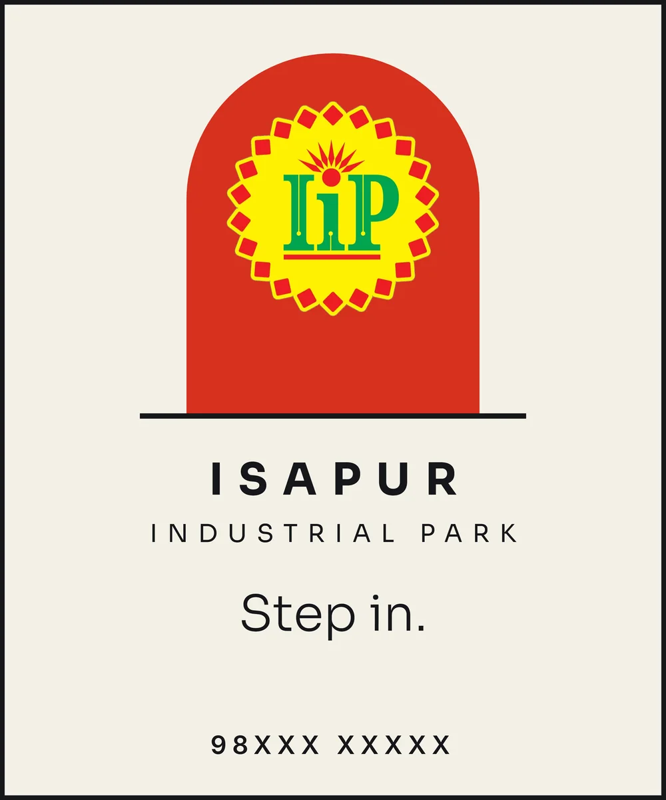
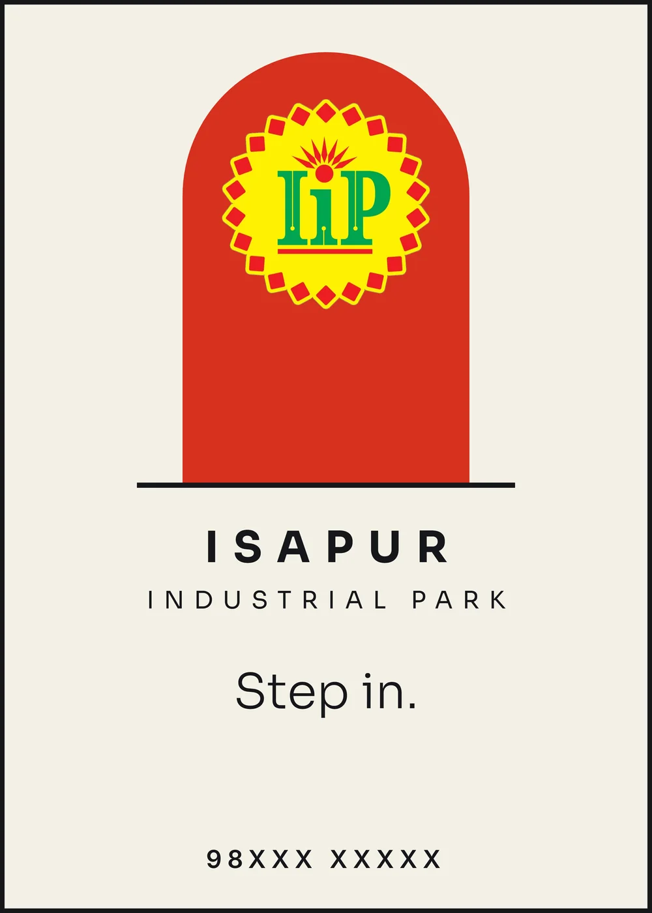
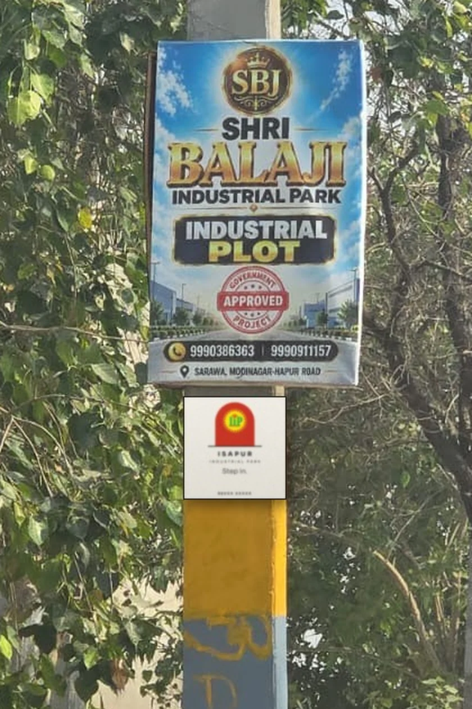
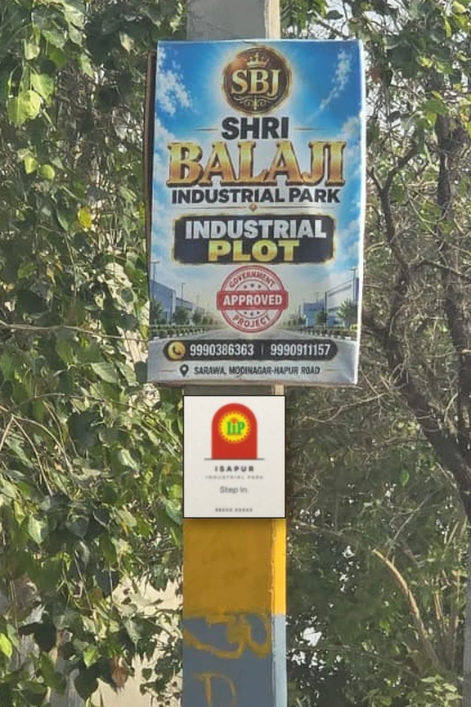
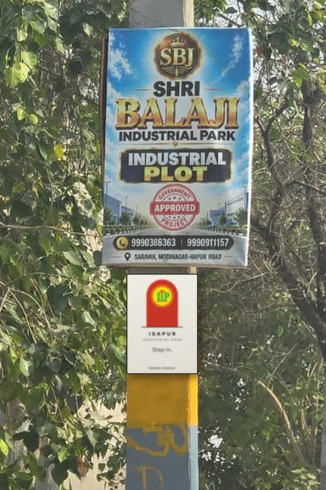
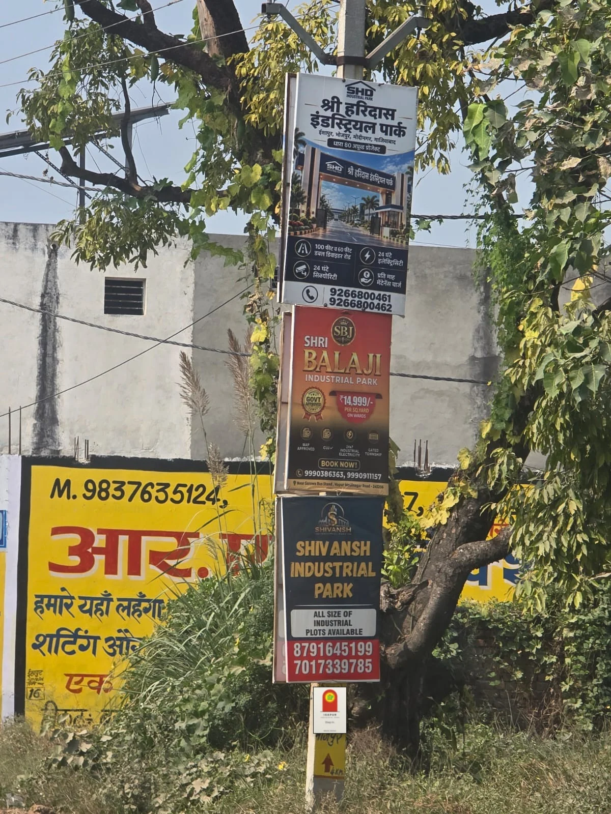
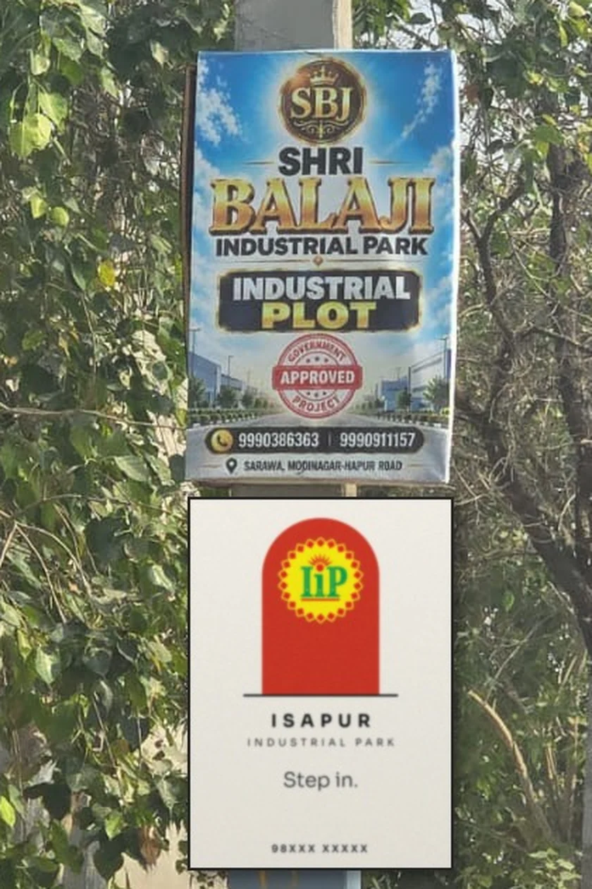
Four poles in a row: three red steps rising, then the doorway. One idea told across 200 metres.
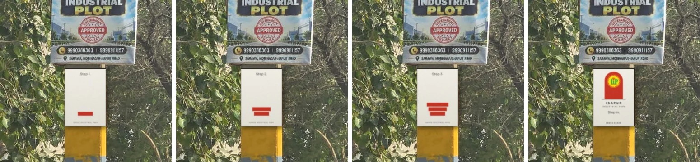
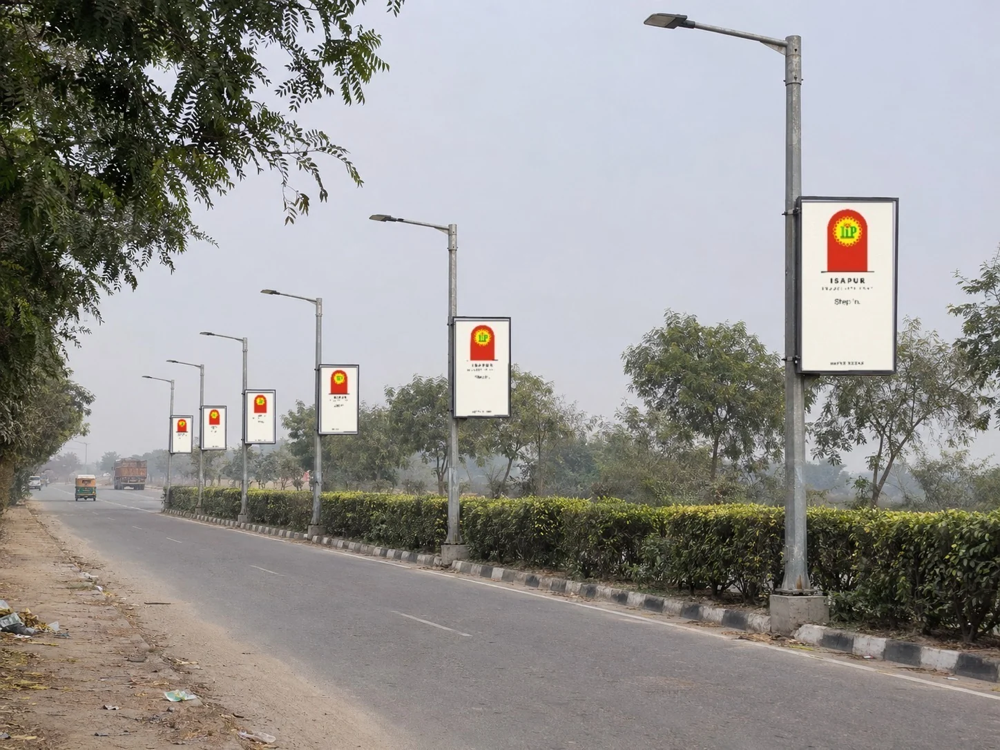
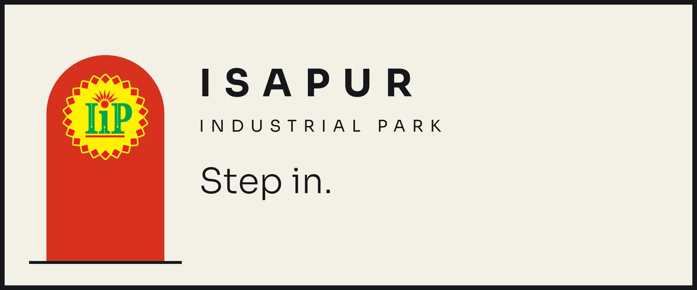
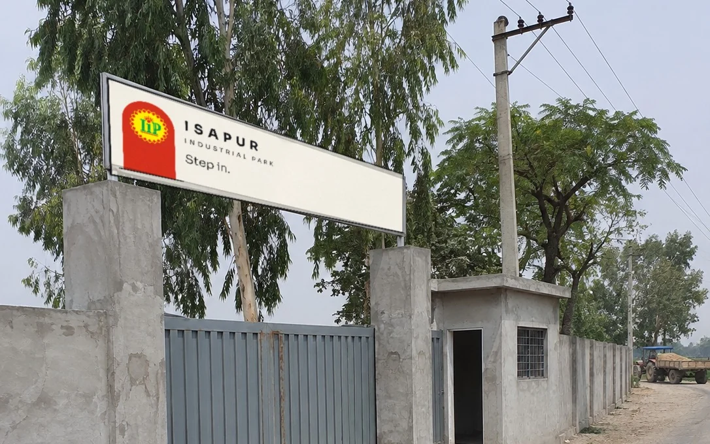
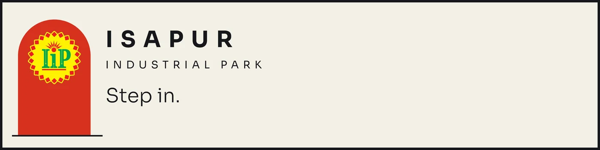